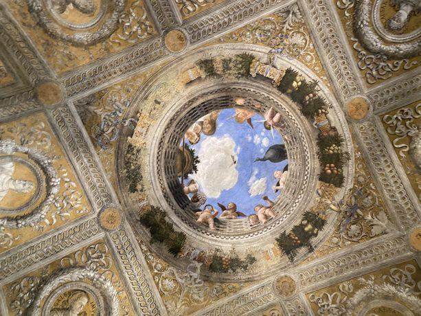

The Artists
One name, one work, one way of seeing.
Choose the artistic vision you want to explore.
A reading order based on artists’ first major contributions across all disciplines. Their careers overlap: this is not a ranking by date of birth.
11 artists to discover

Architecture
Leon Battista Alberti
1404 – 1472
Antiquity becomes a language for invention.

Architecture
Brunelleschi
1377 – 1446
Proportions that give space its rhythm.

Painting
Cimabue
c. 1240 – c. 1302
Figures acquire a new sense of presence.

Sculpture
Donatello
c. 1386 – 1466
Sculpture explores bodies, relief and expression.

Painting
Fra Angelico
c. 1395 – 1455
Light gives the sacred a tangible presence.

Painting
Giotto
c. 1267 – 1337
Stories take shape; gestures become emotions.

Painting
Masaccio
1401 – 1428
Bodies with weight in a convincing space.
 Recently added
Recently addedPainting
Piero della Francesca
c. 1415–1420 – 1492
A measured world, mysterious narratives.
 Recently added
Recently addedPainting
Paolo Uccello
c. 1397 – 1475
Geometry meets imagination.

Recently addedPainting
Andrea Mantegna
c. 1431 – 1506
Daring perspectives, sculptural figures and an Antiquity full of surprises.
 Recently added
Recently addedPainting
Sandro Botticelli
1445 – 1510
Lines that make bodies dance, between mythology, desire and power.

Painting
Fra Filippo Lippi
vers 1406 – 1469
A painter-monk who gave the figures of paradise the faces of everyday life.
No artists match your search
Try another name or change the discipline.
Images and credits are provided on the individual artist pages. Sources and image credits ↗